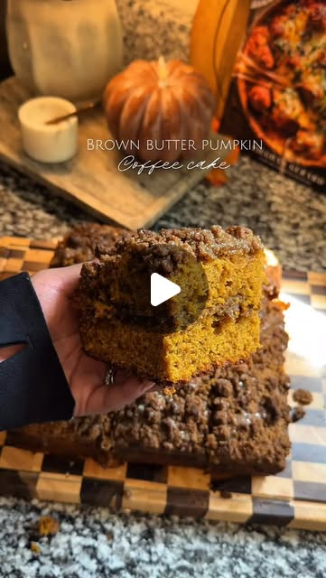

Instagram Reel

Pumpkin coffee cake 🎃🍂
video transcript (enriched by ClaudeClaw)
Summary
[CAPTION]
Pumpkin coffee cake 🎃🍂
A fluffy moist pumpkin spice cake with a touch of brown butter layered with brown sugar streusel and a maple glaze, it’s a must for fall.
Pumpkin spice cake:
- 1/2 cup unsalted butter
- 1 1/4 cup brown sugar
- 2 eggs
- 1 cup pumpkin puree
- 1/2 cup plain g...
[CAPTION]
Pumpkin coffee cake 🎃🍂
A fluffy moist pumpkin spice cake with a touch of brown butter layered with brown sugar streusel and a maple glaze, it’s a must for fall!
Pumpkin spice cake:
- 1/2 cup unsalted butter
- 1 1/4 cup brown sugar
- 2 eggs
- 1 cup pumpkin puree
- 1/2 cup plain greek yogurt
- 1 tbsp vanilla extract
- 2 cups AP flour
- 1 tbsp pumpkin pie spice
- 1/2 tsp salt
- 1 tsp baking soda
- 1 tsp baking powder
Brown sugar streusel:
- 1 1/2 cup brown sugar
- 1 1/2 cup AP flour
- 1/2 cup soft unsalted butter
- 1 tbsp cinnamon
- Pinch of salt
Maple glaze:
- 1 cup confectioners sugar
- 1 tbsp maple syrup
- 1 tbsp milk or heavy cream
- 1 tsp vanilla extract
- Pinch of salt
- Place a stick of butter in a small sauce pan on medium high heat, stir continuously until you have a golden foamy butter. Remove from heat and set aside to cool.
- In a large bowl combine the cooled brown butter, brown sugar, Greek yogurt, eggs and pumpkin puree. Give it a good mix until everything is well combined.
- To your wet batter add the flour, pumpkin pie spice, salt, baking powder and baking soda and fold until everything is combined then set aside while you work on the streusel.
- In a small bowl add the flour, brown sugar, cinnamon, salt and butter. Work the dry ingredients into the butter until you have a crumble that resembles clumpy sand.
- Line an 8 x 8 baking pan with parchment paper, place half of your batter onto the pan and add a thick layer of streusel. Add the remaining half of your batter over the streusel and top off with another thick layer of streusel.
- Bake at 375F for 45-60 minutes, you’ll know it’s ready when you stick a toothpick in the center of the pan and it comes out dry.
- While the coffee cake bakes start working on the maple glaze, in a small bowl combine the confectioners sugar, maple syrup, milk, vanilla extract and salt.
- Once the coffee cake has baked and cooled, drizzle the maple glaze and enjoy!
#fallrecipes #autumnrecipes #fallbaking #recipe #pumpkinrecipes #pumpkinseason #pumpkincoffeecake #fall #autumn #baking
[VIDEO]
Lottie e Daddy Dum Tis Autumn The trees say they're tired, they've borne too much fruit, charmed all the wayside there's no dispute now shedding leaves they don't give a hoot Lottie Daddy Daddy Dum tis autumn then the birds got together to cherbive the weather
View original on Instagram Reel →